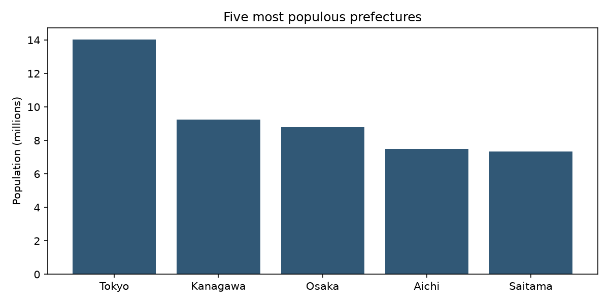
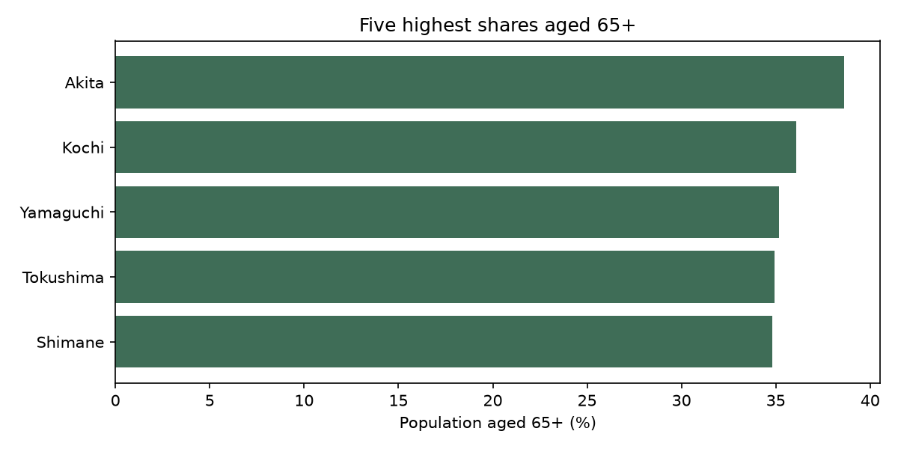
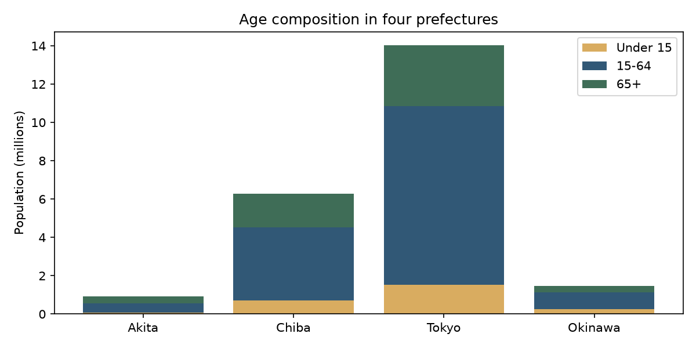
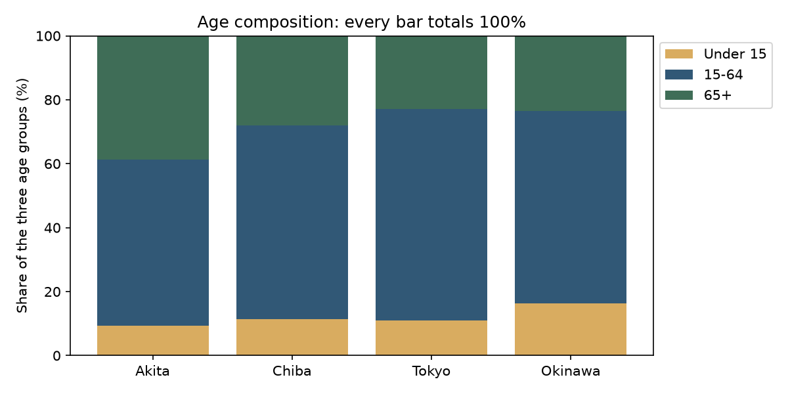
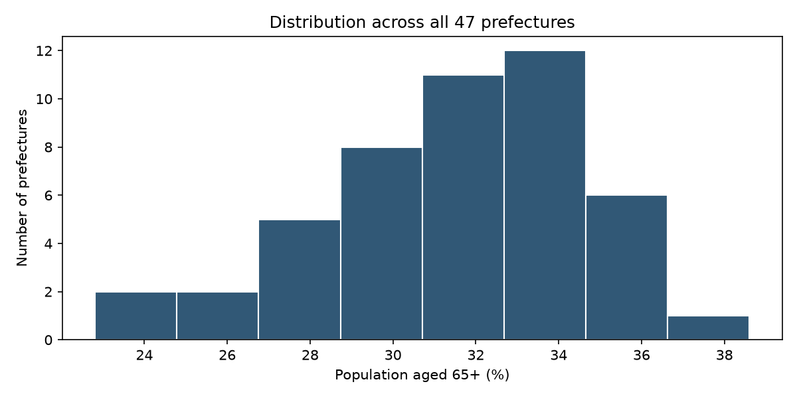
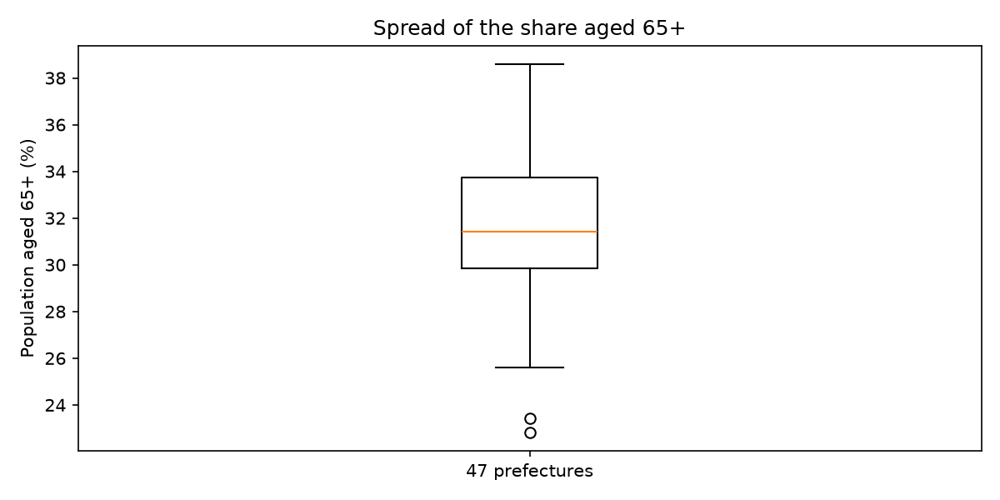
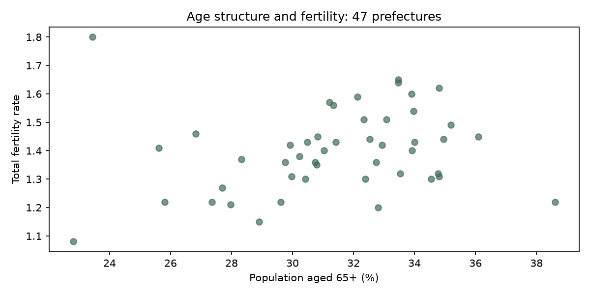
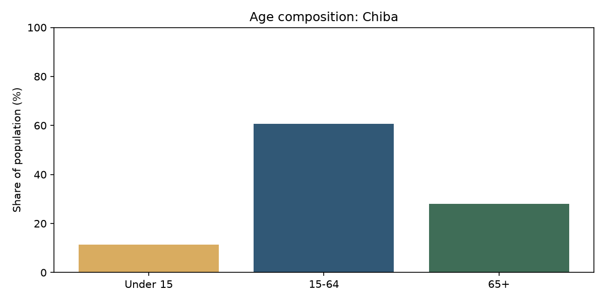
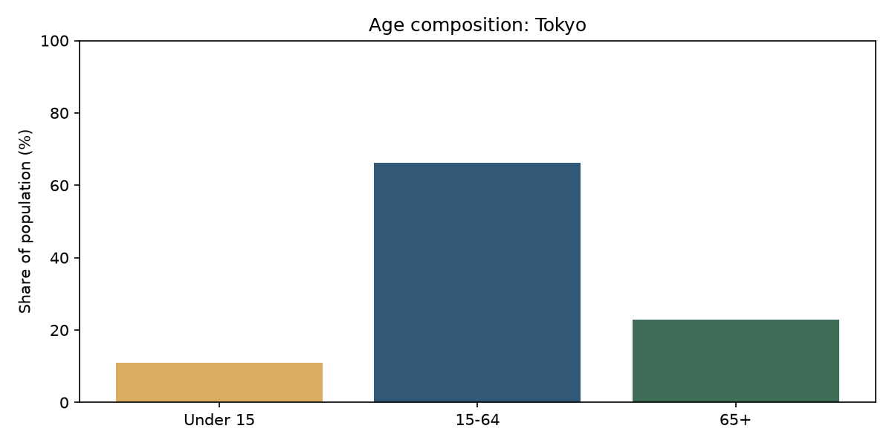

WEEK 06 · JAPAN DATA / CHART REFERENCE
問いに合う、
グラフを選ぼう。
Choose a chart that answers your question.
日本の47都道府県のデータで、短いPythonコードと実際の結果を見比べよう。コードをコピーし、自分のNotebookで試してください。全部を使う必要はありません。
すべて授業の japan.csv からPythonで生成した出力です。ライブ統計ではありません。図のラベルは日本語フォントの設定なしで使えるよう英語です。
Actual Python outputs from the course CSV. Chart labels use English to avoid font setup.
00 / START HERE
準備 / Load the data
新しい空のNotebookを作り、同じフォルダにjapan.csvを置く。最初にこのCode Cellを実行。その後は好きなグラフのコードを別のCellに貼り付けます。説明・問い・気づきはMarkdown Cellに書こう。
csvはPython標準ライブラリ。Matplotlibはグラフを描くライブラリ、pltはその呼び名です。pandasは使いませんが、グラフにはMatplotlibが必要です。
Matplotlibが見つからないとき / ModuleNotFoundError
NotebookのCode Cellで %pip install matplotlib を実行し、必要ならカーネルを再起動して準備Cellを実行し直します。インストールできない場合は、課題ページの文字のランキングや表でレポートを作って構いません。
csv.DictReaderは1行を辞書として読み込み、list()で47行をリストにします。CSVの値は文字列なので、計算ではint()やfloat()で数値に変えます。
import csv
import matplotlib.pyplot as plt
# Put japan.csv in the same folder as your notebook.
with open("japan.csv", encoding="utf-8-sig", newline="") as file:
data = list(csv.DictReader(file))
print(len(data), "prefectures")
print(data[0]["Prefecture"], data[0]["総人口"])OUTPUT
47 prefectures Hokkaido 5140000
共通：figure()で新しい図、title()でタイトル、xlabel()・ylabel()で軸名と単位、tight_layout()で余白を調整、show()で表示。リスト内包表記 [値 for row in data] は、forで各行から値を集める短い書き方です。
01 / PYTHON → OUTPUT
棒グラフ / Bar chart
人口が多い都道府県は？ / Which prefectures have the largest populations?
sorted(..., key=..., reverse=True)で人口順に並べ、[:5]で上位5件。key=lambda row: ...は各行から並べ替えに使う値を取り出します。int()で文字列を数値にし、100万で割って百万人単位にします。plt.bar(x, height)の第1引数は名前、第2引数は高さ。
top5 = sorted(data, key=lambda row: int(row["総人口"]), reverse=True)[:5]
names = [row["Prefecture"] for row in top5]
population = [int(row["総人口"]) / 1_000_000 for row in top5]
plt.figure(figsize=(8, 4))
plt.bar(names, population, color="#315876")
plt.ylabel("Population (millions)")
plt.title("Five most populous prefectures")
plt.tight_layout()
plt.show()
棒の高さは人口。東京都が最大です。縦軸は0から始まります。 / Height represents population, in millions.
02 / PYTHON → OUTPUT
横棒グラフ / Horizontal bar chart
高齢者の割合が高いのは？ / Where is the share aged 65+ highest?
65歳以上人口 / 総人口 * 100で割合（%）を計算。人数の多さと割合の高さは違います。plt.barh()は横棒。invert_yaxis()で最大値を上にします。
top5 = sorted(data,
key=lambda row: int(row["65歳以上人口"]) / int(row["総人口"]),
reverse=True)[:5]
names = [row["Prefecture"] for row in top5]
shares = [int(row["65歳以上人口"]) / int(row["総人口"]) * 100 for row in top5]
plt.figure(figsize=(8, 4))
plt.barh(names, shares, color="#3f6d57")
plt.gca().invert_yaxis()
plt.xlabel("Population aged 65+ (%)")
plt.title("Five highest shares aged 65+")
plt.tight_layout()
plt.show()
人口の大小にかかわらず、高齢者の割合で比べます。 / Compare shares rather than counts.
03 / PYTHON → OUTPUT
年齢の積み上げ棒グラフ / Stacked bar
人口の年齢構成を比べよう / Compare age composition.
bottom=youngで2段目の開始位置を指定。3段目のbaseは下の2段の合計です。labelとlegend()で凡例を表示。これは人数の積み上げで、100%積み上げではありません。
chosen = [row for row in data
if row["Prefecture"] in ["Tokyo", "Chiba", "Akita", "Okinawa"]]
names = [row["Prefecture"] for row in chosen]
young = [int(row["15歳未満人口"]) / 1_000_000 for row in chosen]
working = [int(row["15～64歳人口"]) / 1_000_000 for row in chosen]
older = [int(row["65歳以上人口"]) / 1_000_000 for row in chosen]
base = [young[i] + working[i] for i in range(len(chosen))]
plt.figure(figsize=(8, 4))
plt.bar(names, young, label="Under 15", color="#d9ac60")
plt.bar(names, working, bottom=young, label="15-64", color="#315876")
plt.bar(names, older, bottom=base, label="65+", color="#3f6d57")
plt.ylabel("Population (millions)")
plt.title("Age composition in four prefectures")
plt.legend()
plt.tight_layout()
plt.show()
棒全体は3年齢区分の合計。構成比を比べたい場合は各区分を合計で割ります。CSVでは総人口と3区分の合計に差がある県もあるので、必ず確認しよう。 / These are counts, not percentages; check age totals against total population.
04 / PYTHON → OUTPUT
100%積み上げ棒グラフ / 100% stacked bar
人口の規模をそろえ、年齢構成の割合を比べよう / Compare age shares on the same scale.
各年齢区分を3区分の合計で割り、100を掛けます。これで、どの県も棒全体が100%になります。plt.ylim(0, 100)だけでは割合に変換されません。CSVでは総人口と年齢区分の合計に小さな差がある県もあるため、この図は「3年齢区分に占める割合」です。
chosen = [row for row in data
if row["Prefecture"] in ["Tokyo", "Chiba", "Akita", "Okinawa"]]
names = [row["Prefecture"] for row in chosen]
young = [int(row["15歳未満人口"]) for row in chosen]
working = [int(row["15～64歳人口"]) for row in chosen]
older = [int(row["65歳以上人口"]) for row in chosen]
# Divide each age group by the sum of all three age groups.
totals = [young[i] + working[i] + older[i] for i in range(len(chosen))]
young = [young[i] / totals[i] * 100 for i in range(len(chosen))]
working = [working[i] / totals[i] * 100 for i in range(len(chosen))]
older = [older[i] / totals[i] * 100 for i in range(len(chosen))]
base = [young[i] + working[i] for i in range(len(chosen))]
plt.figure(figsize=(8, 4))
plt.bar(names, young, label="Under 15", color="#d9ac60")
plt.bar(names, working, bottom=young, label="15-64", color="#315876")
plt.bar(names, older, bottom=base, label="65+", color="#3f6d57")
plt.ylim(0, 100)
plt.ylabel("Share of the three age groups (%)")
plt.title("Age composition: every bar totals 100%")
plt.legend(loc="upper left", bbox_to_anchor=(1, 1))
plt.tight_layout()
plt.show()
人数の積み上げと同じ4県・同じ色です。人口の多さは見えなくなり、構成比を比較しやすくなります。秋田県と沖縄県の65歳以上の割合はどう違う？ / Equal heights show composition, not population size.
05 / PYTHON → OUTPUT
ヒストグラム / Histogram
高齢者の割合は、どの範囲に集中する？ / How are the 47 shares distributed?
plt.hist(values, bins=8)は数値を8区間に分け、各区間に入る都道府県の数を数えます。棒グラフの「都道府県ごと」と異なり、横軸は数値の範囲です。binsを変えると分布の見え方も変わります。
shares = [int(row["65歳以上人口"]) / int(row["総人口"]) * 100
for row in data]
plt.figure(figsize=(8, 4))
plt.hist(shares, bins=8, color="#315876", edgecolor="white")
plt.xlabel("Population aged 65+ (%)")
plt.ylabel("Number of prefectures")
plt.title("Distribution across all 47 prefectures")
plt.tight_layout()
plt.show()
横軸は65歳以上の割合、縦軸は都道府県数。47件の分布であり、47人の年齢分布ではありません。 / Each observation is a prefecture.
06 / PYTHON → OUTPUT
箱ひげ図 / Box plot
中央値とばらつきを一目で見る / Summarize the same 47 shares.
plt.boxplot(shares)で同じ47件を要約。箱は第1〜第3四分位数（中央の約50%）、箱の中の線は中央値。ひげは箱から1.5×四分位範囲以内の最遠点まで伸び、その外は点で表示されます。ひげが必ず最小値・最大値とは限りません。
shares = [int(row["65歳以上人口"]) / int(row["総人口"]) * 100
for row in data]
plt.figure(figsize=(8, 4))
plt.boxplot(shares)
plt.xticks([1], ["47 prefectures"])
plt.ylabel("Population aged 65+ (%)")
plt.title("Spread of the share aged 65+")
plt.tight_layout()
plt.show()
箱ひげ図は個々の県名を示しません。どの県か知りたいときは、横棒グラフや表も使います。 / A dot beyond a whisker is not automatically a data error.
07 / PYTHON → OUTPUT
散布図 / Scatter plot
2つの数値の関係を探す / Compare two variables.
plt.scatter(x, y)は1県を1点で表します。xとyは同じ順序・同じ件数にします。alpha=0.7は透明度。関係が見えても、それだけで原因とは言えません。
shares = [int(row["65歳以上人口"]) / int(row["総人口"]) * 100
for row in data]
fertility = [float(row["合計特殊出生率"]) for row in data]
plt.figure(figsize=(8, 4))
plt.scatter(shares, fertility, color="#3f6d57", alpha=0.7)
plt.xlabel("Population aged 65+ (%)")
plt.ylabel("Total fertility rate")
plt.title("Age structure and fertility: 47 prefectures")
plt.tight_layout()
plt.show()
横軸は高齢者の割合、縦軸は合計特殊出生率。合計特殊出生率は出生数でも人口に占める出生割合でもありません。 / Association does not establish causation.
08 / PYTHON → OUTPUT
forで複数のグラフ / One loop, two charts
同じ処理を、違う県に使う / Repeat a chart for each prefecture.
for row in chosen:で1県ずつ処理。plt.figure()をループ内に置き、県ごとに新しい図を作ります。f"...{...}..."でタイトルも変わります。リスト内包表記の角括弧も「各データから値を取り出す」繰り返しです。
chosen = [row for row in data if row["Prefecture"] in ["Tokyo", "Chiba"]]
for row in chosen:
total = int(row["総人口"])
shares = [int(row["15歳未満人口"]) / total * 100,
int(row["15～64歳人口"]) / total * 100,
int(row["65歳以上人口"]) / total * 100]
plt.figure(figsize=(8, 4))
plt.bar(["Under 15", "15-64", "65+"], shares,
color=["#d9ac60", "#315876", "#3f6d57"])
plt.ylim(0, 100)
plt.ylabel("Share of population (%)")
plt.title(f"Age composition: {row['Prefecture']}")
plt.tight_layout()
plt.show()

県名を追加すれば、その県のグラフも作られます。比べやすくするため、縦軸を両方とも0〜100に固定しています。 / Add a prefecture name to make another chart.